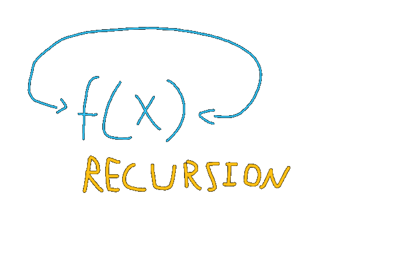

Recursion
Let’s look at a simple problem to understand the idea behind recursion. That is, calculating the nth Fibonacci number within the sequence. The mathematical definition of Fibonacci is as follows:
f(0) = 0
f(1) = 1
f(n) = f(n - 1) + f(n - 2)
The Fibonacci sequence1 is infinite, generating each number by adding the two directly preceding numbers. So, the first few elements, starting from 0, are: 0, 1, 1, 2, 3, 5, 8, 13… which can be rewritten as: 0, 1, (0 + 1), (1 + 1), (2 + 1), (3 + 2), (5 + 3)…
Before proceeding with the article, I recommend you write the code solution for the Fibonacci sequence. You may do it in either a for loop style or a recursive style or both.
Solution 1: The For Loop
public static long fib(long x)
{
long current = 1;
long prev = 0;
if (x <= 0)
return prev;
for (long i = 1; i < x; ++i)
{
long temp = current;
current = current + prev;
prev = temp;
}
return current;
}A few things to notice here. Firstly, this is not the recursive method. It spans 17 lines of code (including the header and bracket), and it’s not close to the mathematical definition. Anyone who’s familiar with the solution would be able to recognize it as Fibonacci, however, finding errors in the code through a single scan or recognizing the sequence it produces as someone who’s not familiar with Fibonacci would prove to be difficult tasks. While the code is perfectly functional and would be most suitable for a language like Java for reasons we’ll discuss later, it’s easy to see the downsides of a solution like this. So, what would be a better solution?
Solution 2: Recursion
public static long fib_rec(long x)
{
if (x <= 0) return 0; // f(0) = 0
if (x == 1) return 1; // f(1) = 1
// f(n) = f(n - 1) + f(n - 2)
return fib_rec(x - 1) + fib_rec(x - 2);
}
For a simple function call, fib_rec(1), it calls itself 0 times.
fib_rec(2) is fib_rec(1) + fib_rec(0), which is 2 calls.
fib_rec(3) is fib_rec(2) + fib_rec(1), which is 3 calls.
fib_rec(4) is fib_rec(3) + fib_rec(2), which is 5 calls.
fib_rec(5) is fib_rec(4) + fib_rec(3), which is 8 calls.
fib_rec(6) is fib_rec(5) + fib_rec(4), which is 13 calls.Solution 3: Tail Recursion
public static long fib_tail(long x)
{
return fib_tail(x, 1, 0);
}
public static long fib_tail(long x, long current, long previous)
{
if (x <= 0) return previous;
if (x == 1) return current;
return fib_tail(--x, current + previous, current);
}There are a few things to notice. Firstly, I use Java’s overloading feature here, which is equivalent to default variables in python. Secondly, the calculation is done and is stored within the function parameters. This means that it calls one single function, unlike the previous solution, and once it reaches the end of the recursive chain, it simply returns the result without further calculation. This is known as tail recursion, as it only calls itself once and it is the last line of the method. They prove to be just as fast as a for loop function, while also remaining to be almost identical to the mathematical solution, with only a slight adjustment.
There is still one problem with this, however, which brings me to what I said earlier regarding the first solution:
While the code is perfectly functional and would be most suitable for a language like Java for reasons we’ll discuss later
I specifically mention Java and not any other language, as Java does not implement what is known as tail call optimization. To keep the article short, say you have the method
public static long recursion(int x, int y)
{
if (x <= 0) return y;
return recursion(--x, y + 1);
}Which simply produces x + y by summing individual 1s recursively. If you were to call recursion(10_000, 0), it would work perfectly fine. However, add another 0, recursion(100_000, 0), and you will get a nasty stack overflow. This is because each function call takes an additional slot in what’s known as the call stack, which only has a limited number of slots. For the second solution, taking a slot is necessary, as we require the function to be called back to perform our addition operation. However, for tail-recursive methods, nothing is being done to our call other than its return, so it doesn’t need a slot. Some compilers and interpreters recognize that, and they allow the function to take constant space. The feature is called Tail Call Optimization (TCO), and languages such as Scala and Javascript implement it. Java, unfortunately, does not. There are workarounds, but I’ll leave you to explore those on your own.
Conclusion
I hope you learned something today, perhaps something a bit more than your first introduction to recursion in school. The lecture I gave was more of a fun tangent, as it’s unlikely I’ll be using recursion in the club’s upcoming Java projects. That being said, this knowledge can prove itself essential once you expand to other languages such as Javascript or F#, where immutability is considered sacred. There are also some applications, which are much more difficult to write using for loops than recursive functions, but I’ll leave you to explore these matters on your own. For questions, you can contact me at amrojjeh@outlook.com